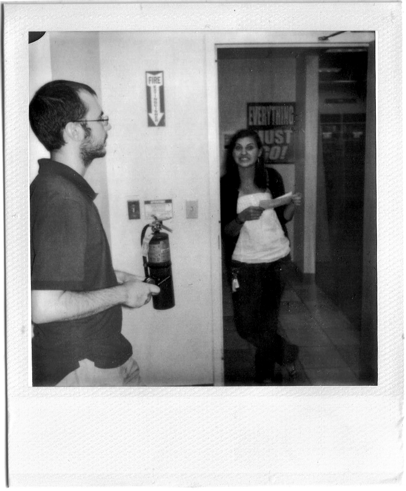

ABOUT THE AUTHOR
Rebecca Van Der Jagt

Rebecca Van Der Jagt began working at Borders in June of 2011 and personally experienced the liquidation of the Borders location in Ramsey, New Jersey. She is currently pursuing a Masters degree in Sociology and Education at Columbia Teachers College and aspires to be both a writer and an educator.